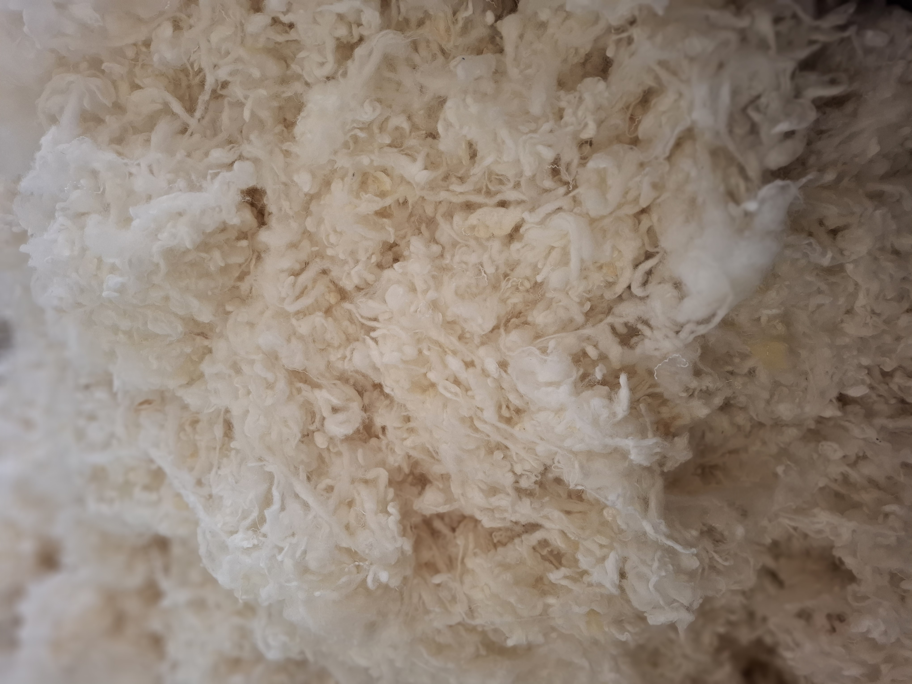
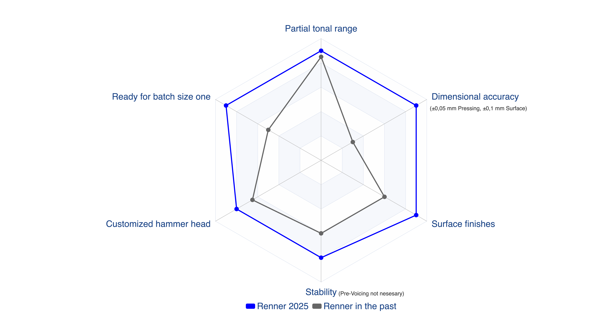
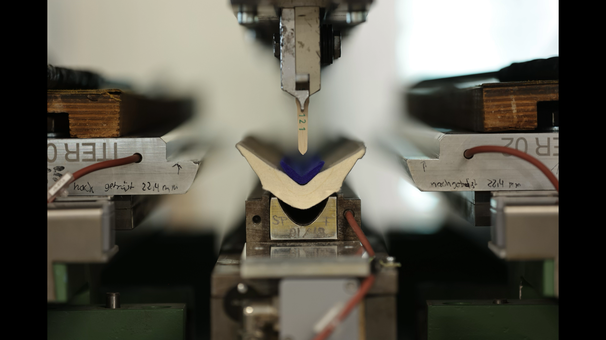
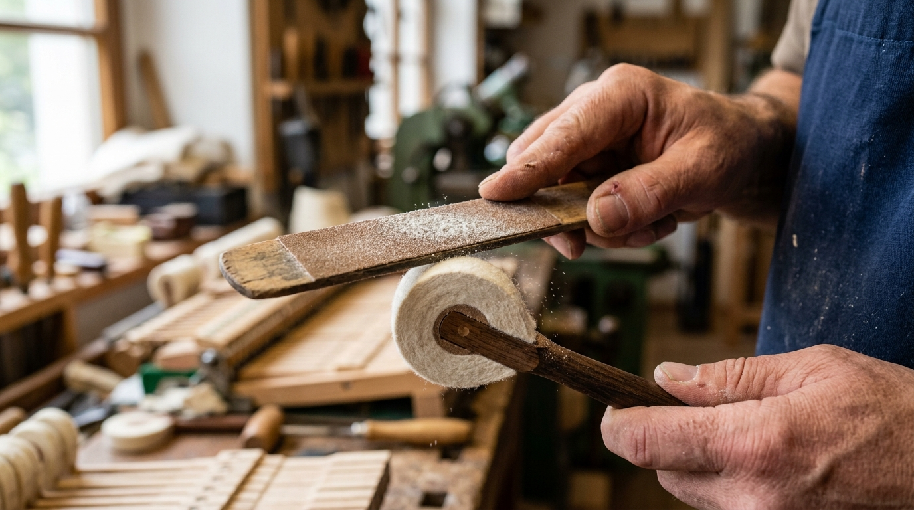

LOUIS RENNER
Das Herzstück des Klaviers: Höchste Präzision, die neue Fertigung in Meuselwitz & das revolutionäre Yamaha-Kit
The Heart of the Piano: Ultimate Precision, the New Meuselwitz Headquarters & the Revolutionary Yamaha Kit
ピアノの心臓部：究極のドイツ精密技術、モイゼルヴィッツ新本社拠点、そして革新のヤマハキット
钢琴的心脏：德国雷诺百年至臻工艺、莫伊瑟尔维茨新总部启航与颠覆性雅马哈专用套件
140+ Jahre Perfektion: Gegründet 1882
-
1882 – Die Vision von Louis Renner: Erkannte, dass der wachsende Anspruch der Musikwelt nach feinfühligerer und langlebigerer Mechanik eine spezialisierte, handwerkliche Spitzenfertigung verlangt.
-
1906 – Eigene Hammerkopffertigung: Aufbau einer spezialisierten Produktionslinie für Hammerköpfe – heute das klangbestimmende Herzstück der Klaviere weltweit.
-
Pioniergeist & Kontinuität: Technisierung durch Oscar Renner, Einführung modernster Fertigungsmethoden bei unverändertem Bekenntnis zu 100% "Made in Germany".

Die weltweite Referenz für Konzertflügel
Konzertsaal-Standard
Verbaut in den berühmtesten Konzertflügeln der Welt. Ob Steinway & Sons, Bösendorfer, Schimmel, Fazioli, C. Bechstein oder Steingraeber – Renner ist der globale Maßstab für Repetiergeschwindigkeit und Dynamik.
Unerreichte Präzision
Mikrometergenaue Fertigungstoleranzen in Holz, Filz und Achsgelenken. Maximale Zuverlässigkeit selbst bei intensivster pianistischer Beanspruchung in weltberühmten Philharmonien.
Naturmaterialien höchster Güte
Ausgewählte Weißbuche (Hornbeam), Tonholz-Nussbaum, Merinowolle von zertifizierten Schafzüchtern und naturbelassene Rohstoffe – frei von aggressiven synthetischen Härtungsmitteln.
Die Strategische Weichenstellung: Meuselwitz
-
Historische Zäsur: Bisher erfolgte die Rohholzverarbeitung in Gärtringen bei Stuttgart und die Endmontage in Meuselwitz bei Leipzig.
-
Alles unter einem Dach: Durch die Zusammenlegung am Standort Meuselwitz entsteht das modernste Produktionszentrum für Klaviermechaniken und Hammerköpfe weltweit.
-
Maximaler Qualitätsvorteil: Durchgängige Klimakontrolle von der Rohholzlagerung über das Fräsen und Pressen bis zur Feinjustierung – kürzere Durchlaufzeiten und noch engere Toleranzen.

Der Umbau & Umzug in Bildern (2026)


Das Geheimnis: Filzfabrik Wurzen (FFW)
-
Ausschließliche Spitzenqualität: Louis Renner bezieht seinen Oberfilz exklusiv von der renommierten Filzfabrik Wurzen.
-
Schonende Carbonisierung: Die Rohwolle wird bei FFW besonders schonend thermisch/mechanisch gereinigt. Die natürliche Schuppenstruktur der Wollfaser bleibt unversehrt.
-
Maximale Rückstellkraft: Unbeschädigte Wollfasern gewährleisten die dauerhafte Elastizität und dynamische Spannkraft des Hammerkopfes über Jahrzehnte.

Wollfaser-Ausrichtung & Vliesbildung
-
Definierte Faserrichtung: Die Wolle wird als Vlies mit einer exakt festgelegten Ausrichtung der Einzelfasern aufbereitet.
-
Mehrstufiges Walken: Durch Feuchte, Wärme und kontrollierte mechanische Bewegung verhaken sich die Wollschuppen formstabil ohne chemische Kleber.
-
Keine künstlichen Bindemittel: 100% rein physikalische Faserbindung – nur so kann der Intonateur später gezielt mit der Nadel arbeiten.

Große Auswahl an Premium-Filzplatten
-
Agile Kundenanpassung: Renner verfügt über ein umfassendes Lager an Filzplatten unterschiedlichster Dichten und Dimensionen.
-
Dichtegradierung: Natürlicher kontinuierlicher Härteübergang vom voluminösen Bassfilz hin zum hochverdichteten Diskantfilz.
-
Wollmischungen nach Maß: Speziell kalibrierte Mischungen für den traditionell-warmen europäischen Klang bis hin zum brillant-tragfähigen Konzertklang.

Filzzuschnitt – Neue Robotertechnologie
-
Scherspannungsfreier Schnitt: Das Spezialmesser gleitet ohne Verzug durch den dicken Filz, wodurch die Faserorientierung zu 100% erhalten bleibt.
-
Perfekter Trapezwinkel: Exakt berechnete Flankenwinkel für die gleichmäßige Dehnung beim späteren Pressen um den Holzkern.
-
Reproduzierbare Höchstqualität: Keine Schnittungenauigkeiten oder Ausfransungen wie bei herkömmlichen Handschnitten.
Profilierung des Unterfilzstreifens
-
Dämpfungs- & Spannungsfunktion: Der Unterfilz dämpft harte Resonanzspitzen und erzeugt die Grundelastizität im Hammerkörper.
-
Spezifische Profilkontur: Vor dem Fügen wird der Unterfilz mit hochpräzisen Fräswerkzeugen auf das exakte Querschnittsprofil gebracht.
-
Perfekte Passung auf den Holzkern: Verhindert Luftblasen und ungleichmäßige Klebeflächen beim Heißleimen.
Fräsen des Holzkern-Profils
-
Selektiertes Hartholz: Feinjährige Weißbuche (Hornbeam) oder Nussbaum. Hohe Formstabilität und optimales Masse-Steifigkeits-Verhältnis.
-
Akustische Formgebung: Der Winkel und die Verjüngung des Kerns leiten die Aufprallenergie der Saite verzögerungsfrei an den Resonanzboden weiter.
-
Exakter Bohrungssitz: Formtreue gewährleistet später die absolut rechtwinklige oder mensurgerechte Stielaufnahme.
Pressen & Heißleimen des Hammerkopfes
-
Aufbau der Eigenspannung: Der Filz wird um den Kern gepresst. Die dabei entstehende Spannung in den Filzschultern sorgt für die federnde Rückschnellkraft nach dem Saitenanschlag.
-
Spezial-Heißleimung: Verwendung von speziellem Knochen-/Haut- oder modifiziertem Weißleim, der elastisch bleibt und Schwingungen nicht abdämpft.
-
Klimatisierte Ruhephase: Nach dem Pressen ruhen die Leisten in kontrollierter Luftfeuchtigkeit, um Spannungsspitzen harmonisch abzubauen.
CNC-Bearbeitung & Leistenkonditionierung
-
Flankensäuberung: Nach dem Pressen wird der überschüssige Leim und Filz auf CNC-Fräsmaschinen exakt egalisiert.
-
Präzisions-Trennschnitt: Die 88 Einzelhammerköpfe werden mit ultradünnen Diamant-/HM-Sägeblättern getrennt.
-
Stufenlose Breitenstaffelung: Exakte Einhaltung der Breitenabstufung von 11,5 mm im tiefen Bass bis hin zu 9,5 mm im hohen Diskant.

Bohren & Nieten des Hammerkopfes
-
Individuelle Bohrungswinkel: Winkelprogression vom Bass (schräg zur Saite) bis zum Diskant (senkrecht). Toleranz unter 0,05 Grad.
-
Optionale T-Draht-Heftung: Zusätzliche mechanische Niete sichert die Filzenden dauerhaft gegen Ablösen selbst bei härtester Belastung (Fortissimo-Konzertspiel).
-
Verrundete Kanten: Saubere Kantenverrundung der Filzspitzen für reibungsloses Nachbarspiel.
Gezieltes Klangspektrum für jeden Flügel
Europäisch-Romantisch
Mittlere Filzdichte mit hoher Elastizität. Warmer, voluminöser Grundton, farbenreiche singende Mittellage und weicher, poetischer Anschlag. Ideal für Schubert, Chopin, Brahms.
Konzert-Standard (Großer Saal)
Ausbalancierte Dichtegradierung mit starker Eigenspannung. Schnelle Tonentwicklung, kraftvolles Fortissimo mit enormem dynamischem Spielraum und klarer Trennschärfe im Orchester.
Modern-Brillant (Studio & Jazz)
Härterer Kernfilz mit hoher Dichte. Sofortige Projektion, brillante Obertöne und durchsetzungsstarker, knackiger Anschlagspunkt für moderne Spielarten und Aufnahmestudios.
Interaktiver Klang- & Obertongenerator
Klicken Sie auf ein Klangprofil, um eine synthetisierte Klavier-Schwingung mit physikalisch berechneten Obertönen und Saiten-Inharmonizität abzuspielen:
Korrekte Spezifikation: Die Schlüsselparameter
-
1. Bohrungsabstand & Höhe: Maß zwischen Saitenschlaglinie und Bohrungszentrum. Bestimmt Hebelverhältnis und Auslösung.
-
2. Bohrungswinkel (Boring Angles): Exakte Anpassung an die Mensur und Spreizung des Saitenbezugs (Basskreuzung bis zu 14° Schrägung).
-
3. Hammerkopfgewicht & Gradierung: Grammaturverlauf von Note 1 (ca. 10.5g) bis Note 88 (ca. 4.0g) – entscheidend für das dynamische Spielgewicht.
-
4. Kernholz & Filzhärte: Auswahl passend zum Resonanzbodenvolumen und Raumakustik.

Maßanfertigung: Vom Einzelstück bis zur Großserie
-
Über 500 bestehende Modelle: Exakte Nachbauten für historische wie moderne Klaviere und Flügel aller Epochen.
-
Maßanfertigung nach Muster: Klavierbauer senden Altmuster oder Vermessungsdaten ein – Renner fertigt den Satz mikrometergenau an.
-
Abgebohrt & Vorgeformt: Köpfe mit fertigen Stiellöchern, T-Nieten, Kapselwinkeln und angefasten Spitzen lieferbar.

Das Neue RENNER YAMAHA-KIT
-
Komplett fertig eingeleimt: Hammerstiele und Hammerköpfe sind werkseitig in absoluter Perfektion miteinander verleimt und im 90°-Winkel zentriert.
-
Vorintonation wird überflüssig! Durch die neue Präzisionsfertigung in Meuselwitz und FFW-Filzkonditionierung ist die Elastizität ab Werk harmonisiert.
-
Einfach Einschrauben: Alte Hammerkapselschrauben lösen, Renner-Kit auf die Mechanikleiste schrauben – sofort spielbereit!
-
Klanglicher Quantensprung: Verwandelt jeden Yamaha-Flügel in ein Instrument mit vollem, singendem deutschem Konzertflügelklang.

Vergleich: Traditionelle Montage vs. Yamaha-Kit
Mühsamer Werkstattaufwand
- ⏱️ Arbeitszeit: 2 bis 3 volle Werkstatttage für 88 Hämmer.
- 📐 Leim-Risiko: Aufwendiges Ausrichten mit Schablonen; Risiko von Winkelfehlern und Leimverzug.
- 🪡 Aufwendige Vorintonation: Rohe Köpfe müssen stundenlang tief vorgestochen werden, um den Grundklang zu öffnen.
Präzisionsmontage in 1–2 Stunden
- ⚡ Arbeitszeit: Nur ca. 60–90 Minuten zum Einschrauben und Chorausrichten!
- 🎯 100% Werkstoleranz: Alle Stiele und Köpfe mit Laser- und CNC-Präzision eingeleimt.
- ✨ Keine Vorintonation: Ab Werk sofort klanglich offen, harmonisch und feindynamisch ansprechbar.
Die Philosophie des Intonierens
-
Mehr als nur »Weichmachen«: Intonieren bedeutet das gezielte Steuern der inneren Elastizitätszonen des Filzes, um den gesamten dynamischen Bereich von Pianissimo bis Fortissimo zu entfalten.
-
Die 3 Säulen der Intonation:
1. Vorintonation: Entlastung der Hauptpressspannung (entfällt beim Yamaha-Kit).
2. Abziehen (Filing): Formung des perfekten Scheitelradius.
3. Fertig- & Feinintonation: Nuancierung für Saal, Pianist und Repertoire. -
Materialschonung: Nur hochwertige, spitze Nadeln verwenden – kein Zerschneiden der Wollfasern!

Die Anatomie der Hammerkopf-Zonen
Die obersten 2–3 mm des Hammerkopfes. Achtung: Niemals tief stechen! Nur bei zu hartem Glasklang ganz oberflächlich mit feinsten Nadeln (0,5 mm) leicht touchieren. Bestimmt die Definition im Pianissimo.
Ca. 10 bis 2 Uhr Position. Die wichtigste Zone für das Mezzoforte. Stechen im 45°-Winkel lockert die Fasern und bringt die warmen, singenden Obertöne zum Aufblühen.
Tiefenzone nahe dem Holzkern. Tiefe Stiche (10–12 mm) federn den wuchtigen Schlag im Fortissimo ab und geben dem Bass ein warmes, dunkles Fundament ohne Klirren.

Das Abziehen & Schleifen (Filing / Sanding)
-
Die goldene Schleifregel: Immer von der Schulter nach oben zum Scheitel feilen – niemals quer oder vom Scheitel nach unten! So richten sich die Wollfasern harmonisch auf.
-
Körnungs-Staffelung:
• Vorschliff (Rillen entfernen): Körnung 240 / 280
• Feinschliff (Oberfläche glätten): Körnung 360 / 400 -
Symmetrischer Scheitelradius: Ein spitzerer Scheitel erzeugt einen helleren Ton; ein flacherer Radius gibt dem Ton mehr Grundtontragkraft.

Konzert-Feinintonation & Raumabstimmung
-
Heißbügeln der Scheitelfläche: Mit einem temperierten Intonierbügeleisen (ca. 140–160°C) wird der Scheitelfilz verdichtet. Das erzeugt seidigen Obertonschimmer im Mezzoforte.
-
Saalanpassung: Trockene Säle verlangen nach lebendigeren Obertönen (Schultern schonen); hallige Säle benötigen warme Dämpfung (flankennadeln).
-
Tonharmonisierung aller 88 Töne: Chromatische Tonleitern und Oktavsprünge spielen, um Lautstärke- und Farbausreißer individuell auszugleichen.
Vielen Dank für Ihre Aufmerksamkeit
Wir freuen uns auf den fachlichen Austausch und Ihre Fragen zu unseren neuen Hammerköpfen und dem Yamaha-Kit!